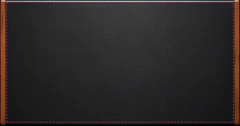
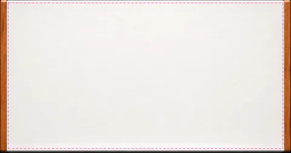
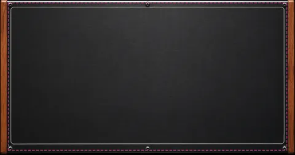
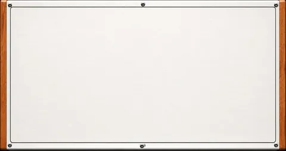

背景のテンプレートBackground templates
パフォーマンス画面（PERF）の背景を自分で作るための下絵です。アプリに入っている 4 枚の板を、背景を置く場所の大きさの PNG にしました。
Starting points for your own perform-screen (PERF) backgrounds: the four panels built into the app, as PNGs sized for the background area.

BLACK PLAIN


WHITE PLAIN


BLACK PANEL


WHITE PANEL

使い方How to use
- 使う端末に合う大きさの PNG をダウンロードして、好きな画像編集アプリで絵や文字を描き足します。
- DBR-1 の PERF で EDIT → ⋯ → Background… → Choose image… で、その画像を選びます。
Download the PNG for your device, draw on it in any image editor, then in DBR-1 open PERF → EDIT → ⋯ → Background… → Choose image… and pick it.
大きさの目安Sizes
| 端末 / Device | 背景を置く場所の横:縦 / Area aspect | テンプレート / Template |
|---|---|---|
| タブレット / Tablet | 約 1.9:1（1920×1200 の画面で約 1870×1000） | 1900×1000 |
| 横にしたスマートフォン / Phone (landscape) | 約 2.5〜2.7:1（2400×1080 前後の画面で約 2200×830） | 2200×830 |
- 比が違う画面では、真ん中を残して上下か左右を切って表示します。大事な絵は端から少し離して置いてください。
On screens with a different aspect, the image is cropped from the middle, so keep important artwork a little away from the edges. - 画像はアプリの中に写されます（画面より大きければ画面の大きさまで縮めます）。
The image is copied into the app (scaled down to the screen size if larger). - 自分の画像を背景にしたときは、部品はマス目の場所いっぱいに並びます（アプリの中の板を選んだときだけ、木の側板と板の縁の内側に収めます）。木の部分に部品を重ねたくないときは、端の列・行を空けて置いてください。
With your own image, parts use the whole grid area (only the built-in panels keep parts inside the wooden sides and edges), so leave the outer columns and rows empty if you don't want parts over the wood.